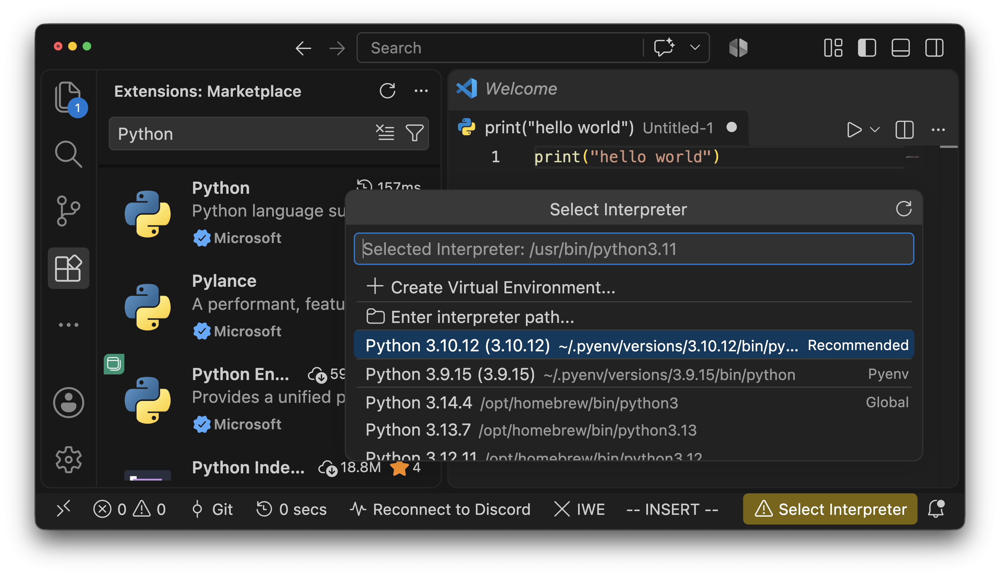
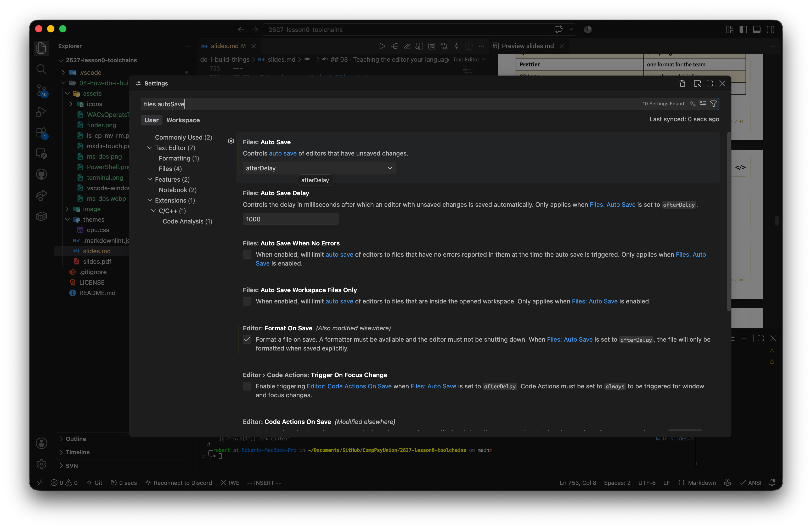
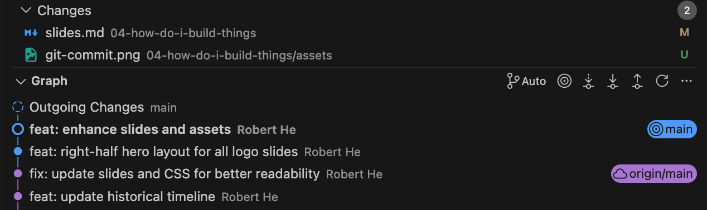
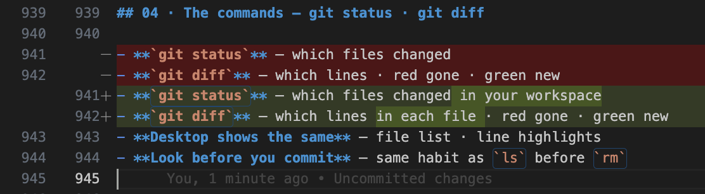
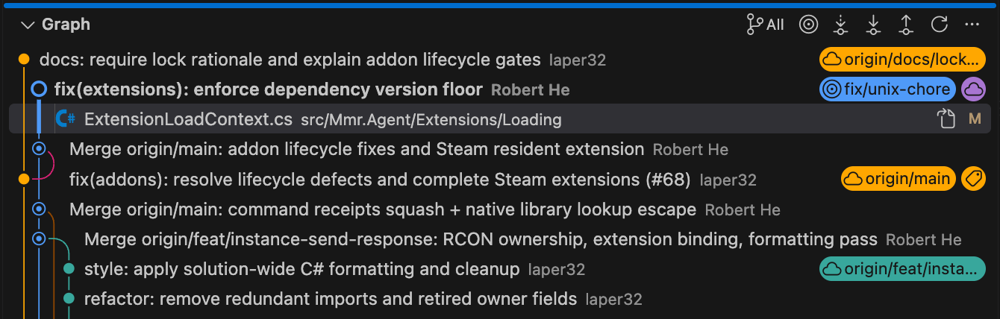
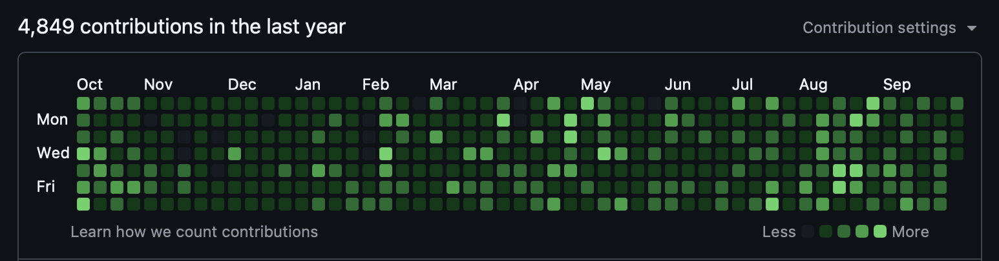

Previous slide Next slide Toggle fullscreen Toggle overview view Open presenter view
How do I build things?
Lesson 0 · Session 04 — CPU Tech Group
7 October 2026
LESSON 0
The plan for today
The need - week one, in five scenes
Terminal - the fifty-year-old interface
VS Code - where you write code
Git & GitHub - keep and share
Markdown & more toolchains - how it fits together
THE NEED
01
Here comes some TODOs
Lesson 0 · The toolchain — CPU Tech Group
01 · Week one, in five scenes
Write a program — tip calculator · due Friday
Make it run — on the grader's machine too
Hand it in — Moodle zip · later, a Git repo
Team project — four people · one codebase
Read code — tutorials → research
TERMINAL
02
Where it all began
Lesson 0 · The toolchain — CPU Tech Group
02 · The scene — first Friday, 21:47
"your code must run on the lab server" — coursework spec, week 1
You log in — no desktop · no iconsOne black window · The mouse does nothing · a blinking cursorIt waits for a line from you
Where did this thing come from? 1969.
02 · Fifty years, one window — 1969–1978
1969 · THE TELETYPE
Teletype — keyboard + paperOne room-sized machine — many usersUnix is born here — everything is a command
1978 · THE GLASS TERMINAL
VT100 — paper becomes a screenShell — 1977 · the program reading your linesTerminal.app — this screen, emulated
02 · Fifty years, one window — 1981–1984
1981 · THE PC JOINS IN
IBM PC + MS-DOS — boots straight to C:\>COMMAND.COM — the DOS shell
1984 · GUI ARRIVES
Macintosh — windows · icons · mousePoint-and-click wins the home
02 · Fifty years, one window — 1985–2006
1985 · WINDOWS ON TOP
Windows 1.0 — a GUI riding on DOSThe prompt never left — one cmd away
2006 · POWERSHELL
Objects, not just text Scriptable everything — the admin's favourite
02 · Fifty years, one window — 2016–today
2016–19 · MODERN WINDOWS SHELL
WSL — virtual Ubuntu · real bash inside WindowsWindows Terminal — tabs · themes
TODAY
Never left — servers · scripts · supercomputersYour laptop ships them — Terminal / PowerShell app · VS Code too
02 · The black window, in two words
Terminal — the windowShell — the program inside · zsh · bash · PowerShellEvery button is a command underneathYou own several already — macOS · Windows · VS Code (Ctrl + `)Why type? — chains · scripts · no screen needed
02 · You might be familiar with these
Open Finder / File Explorer ,Right-click New Folder
Copy · Cut (Move) · Delete
02 · Look inside — ls · cd
Open a folder, look — lsDouble-click in — cd folderBack out — cd ... = here · .. = one level up
macOS · Linux: identical.
02 · New — mkdir · touch
New → Folder — mkdir helloNew → Text Document — touch a.txttouch makes one thing — an empty fileCheck it worked — ls again
02 · Copy, rename — cp · mv
Copy & Paste — cp a.txt b.txtRename — mv b.txt c.txtSame command moves — mv c.txt archive/New name = rename · path = move
02 · Delete — rm
Delete — rm c.txt — goneNo Recycle Bin — no undo, no second chanceWhole folders — rm -r projectLast line of the picture — ls again: c.txt is gone
The one command to respect: ls before rm.
02 · One line, one new project
mkdir my-first-project && cd my-first-project && code .
Folder → in → open — zero mouse.&&The line grows — git init · git push soon
02 · Where it will find you
Installing — pip install · brew install · winget installAutograders — coursework runs from oneSSH — lab servers · cloud VMs · no GUIAutomation — 3am, nobody clicking
VS CODE
03
Where the code gets written
Lesson 0 · The toolchain — CPU Tech Group
03 · The scene — Tuesday, 23:40
"implement a tip calculator in Python"
hello.py in Notepad — all grey · no coloursA typo at line 40 — half an hour goneWord curls your quotes — Python explodesNo help is coming
Code needs a workshop — not a typewriter.
03 · Your workshop for four years
Free · everywhere · lightweight (itself)
Bare on purpose
plugins / capabilities arrive as extensions
03 · One window, multiple areas
1
Activity Bar files · search · git · extensions
2
Explorer your project's files
3
Editor tabs · code · minimap
4
Status Bar branch · Ln/Col · language
03 · Teaching the editor your language
Step 1 — add the language — Python extensionStep 2 — pick the interpreter/compiler — the status-bar pickerStep 3 — Run — output in the panel belowSame pattern forever — C/C++ · Java · Rust
03 · Extensions worth installing today
Extension
Why
Pylance intelligent Python language support
Remote - SSH connect to remote servers
Prettier one format for the team
Error Lens see errors in your code
Live Share collaborate in real-time
Ctrl+Shift+X · all free · can't say why? Uninstall.
03 · Two shortcuts and one habit
Ctrl/Cmd + Shift + P — Command Palette — every commandCtrl/Cmd + P — Quick Open — any fileAuto Save: afterDelay — crashes stop eating homework
Twice with the mouse this week? It has a shortcut.

03 · Beyond VSCode
JetBrains — PyCharm · IntelliJ · CLion — student licencesVim — master in terminalCursor — AI-first · VS Code base
GIT & GITHUB
04
Keep everything, share everything
Lesson 0 · The toolchain — CPU Tech Group
04 · The scene — a filename horror story
essay.docx -> essay_v2.docx -> essay_final.docx -> essay_final_REAL.docx
You edit every day — every day it changesCopies everywhere — USB · cloud drive · emailed to yourself3am, it breaks — which one still worked?"final" means nothing
There has to be a better way.
04 · One folder, five needs
Go back — yesterday's version, please
See what changed — since it last worked
Survive the laptop — dies · stolen · left in the library
Work together — four people · one codebase
Show your work — the world, eventually
04 · Need one — "take me back"
"it worked yesterday" — everyone, eventually
Copy the folder? — that's how essay_v2 was bornUSB drive? — three versions, all staleWhat you actually want — a save point · labelled · keptGames solved this in 1990
04 · The command — git commit
git commitThe message — "works, before refactor" · honest, one linegit logNever typed by you — Desktop's blue button, same command underneath

04 · Need two — "what changed?"
"it worked five minutes ago"
Scroll and squint? — 400 linesMicrosoft Word never told you — what moved between two versionsYou want — just the differences
04 · The commands — git status · git diff
git statusgit diffDesktop shows the same — file list · line highlightsLook before you commit — same habit as ls before rm

04 · Need three — "it's on my other machine"
The laptop dies — or gets stolen · or stays in the libraryTwo computers — the dorm desktop · the labUSB / WeChat yourself — version rouletteYou want — same folder · everywhere · always current
04 · The answer — a cloud copy
Git — the tool · on your laptopGitHub — the site · your folder lives in the cloudgit pushgit pullThe driver — GitHub Desktop · buttons, not typing
04 · The loop, in one picture
YOUR LAPTOP
Working folder hello.py — where you edit
commit →
Local history save points kept by Git
GITHUB — CLOUD COPY
Remote repository backup · teammates · the world
commit — labelled save point, on your laptoppush — upload your save pointspull — download everyone else's
edit · commit · push · pull — 90% of Git.
04 · GitHub Desktop — the loop, no cmd typing
Clone — File → Clone repositoryEdit in VS Code — Desktop lists every changeCommit — tick files · honest message · "Commit to main"Push origin / Pull origin — yours up · theirs down
Hover any button — Desktop shows the git command underneath.
writeyour laptop
→
commit · pushGitHub Desktop
→
see it onlinegithub.com
04 · Branches — parallel timelines
Branch — a parallel timelinemain stays runnable Teams — own branch each · merge by pull requestIn Desktop — one dropdown: new · switch · merge · publish

04 · More than a backup
Public workshop — a profile beats a CV lineOpen source — issues · pull requests · reviewsCoursework & research — team repos · reproducible codeEvery repo opens on its README — next section

05
Markdown - how it all fits
Lesson 0 · The toolchain — CPU Tech Group
05 · The scene — a repo at 1am
you open a stranger's repo — curious, 1am
One file greets you — README.mdPlain text — yet headings · lists · code · linksNo Word · no toolbar · no formatting painterJust characters, doing layout
That language is Markdown — next.
05 · Markdown — write once, read anywhere
YOU TYPE
# My project
## Setup
- install **Python 3.12**
- run `python hello.py`
- see [the docs](https://...)
READERS SEE
My project
Setup
install Python 3.12
run python hello.py
see the docs
Plain text, lightly formatted — readable raw · pretty renderedEverywhere — GitHub · Jupyter · notes appsThis deck — Markdown, rendered by Marp
05 · Syntax 1 — headings
YOU TYPE
# Project
## Setup
### Step 1
#### deeper
READERS SEE
Project
Setup
Step 1
…deeper, rarely used
# count = levelOne # per document — the title, like a paperSpace after # — #text is just text
05 · Syntax 2 — emphasis
YOU TYPE
**important**
*gently*
***both at once***
READERS SEE
important
gently
both at once
Bold — **word**Italic — *word* · underscores _ work tooNo bold button — the characters are the switch
05 · Syntax 3 — lists
YOU TYPE
- apples
- green ones
- pears
1. clone
2. commit
- unordered / 1. orderedIndent three spaces — one nesting levelNumbers renumber themselves — insert a step, the rest follow
05 · Syntax 4 — code
YOU TYPE
run `pip install rich` first
```python
def hello():
print("hi")
```
READERS SEE
run pip install rich first
def hello():"hi" )
Inline — one pair of backticksFences — triple backtick, open and closeName the language — python · c · bash — that's where colour comes from
05 · Syntax 5 — links · images
YOU TYPE
see [the docs](https://docs.python.org)

[text](url)Add ! — the same shape becomes an imageAlt text matters — screen readers read it · shown when the image breaks
05 · Syntax 6 — quotes · tables
YOU TYPE
> Simplicity is a feature.
| Tool | Job |
| ----- | ----- |
| VS Code | write |
| Terminal | run |
READERS SEE
Simplicity is a feature.
Tool Job VS Code write Terminal run
> quotes a line| pipes build tables--- marks the header rowThat's the kit — you can now read any README, line by line
RUN
Terminal
run · install · automate
WRITE
VS Code
code · autocomplete · extensions
VERSION
Git + GitHub
save points · shared in the cloud
#
DOCUMENT
Markdown
READMEs · reports · this deck
LATER THIS SERIES — SSH · DOCKER · CI · AI IN THE TERMINAL
One job each — together, a workshop.
Where to learn more
code.visualstudio.com/docs — VS Code docsmarkdownguide.org — the cheat sheetgithub.com/CompPsyUnion — our GitHub organizationcsdiy.wiki — community resources
Stuck? Group chat · any mentor.
THANK YOU
04
> Now you may BUILD
Lesson 0 · The toolchain — CPU Tech Group · 7 October 2026
CPU · Lesson 0 · Session 04 — How do I build things?
VS Code + Terminal + Git/GitHub for CS freshmen.
Order: the need -> terminal -> VS Code -> Git/GitHub -> Markdown.
Every tool section opens with a scene page (quote + keyword beats) before teaching.
Slides carry keywords only; the HTML comment on each page is the talk track.
Cover: title in the yellow band, subtitle, then who and when.
Agenda: six stops, first row highlighted.
Regular content: five scenarios as a staircase. Enlarged on purpose.
讲稿：开学第一周的五个场景，一层层递进——写程序、跑起来、交上去、
组队、读别人的代码。都不是天才问题，是工具和习惯问题。
Regular content: the scene that motivates the terminal.
讲稿：周五要交的作业，spec 里一行小字：代码必须能在实验室服务器上跑。
你登上去——没有桌面、没有图标，鼠标点哪儿都没反应。
只有一个黑窗口和一个闪烁的光标，它在等你敲一行字。
讲完这页闪回 1969：这个黑窗口是从哪来的。
讲稿（时间线 1/4 · 1969–1978）：
1969 年，贝尔实验室。计算机是一整间屋子的 PDP 系列，贵到一整栋楼共用一台。
工程师排队用一台像打字机的东西跟它说话——电传打字机 teletype（ASR-33）：
你敲一行，机器在纸上敲一行回给你。Unix 就是在这样的机器上写出来的，
所以 Unix 的一切从出生起就是"命令"。
1977/78 年：Bourne shell（真正读你每一行字的程序）登场；
DEC 的 VT100 把纸换成了屏幕——玻璃终端，"黑窗口"的原形，
你 Mac 里的 Terminal.app 就是在软件里模拟这台屏幕。
讲稿（时间线 2/4 · 1981–1984）：
1981 年另一条支线汇进来：IBM PC 出厂直接进 DOS 的 C:\> 提示符，
没有桌面没有图标，开机就是命令行（COMMAND.COM 就是那时的 shell）。
1984 年 Macintosh 把图形界面带进千家万户，点鼠标赢了大众。
讲稿（时间线 3/4 · 1985–2006）：
1985 年微软回应：Windows 1.0 只是在 DOS 外面套了一层图形壳——
黑窗口从没消失，只是藏到了界面底下，今天 Win+R 输入 cmd 就能叫出它
（cmd.exe 就是当年 COMMAND.COM 的后代）。
2006 年 PowerShell：不再只会处理文本，还能处理对象，运维工程师的挚爱。
讲稿（时间线 4/4 · 2016–今天，收尾）：
2016 年 WSL——Windows 里跑真正的 Ubuntu 和 bash；
2019 年 Windows Terminal 带来标签页和主题。
但注意：图形界面赢了大众，机房依然没有屏幕、凌晨三点的脚本不需要鼠标、
SSH 连到千里外的服务器只有文字。
所以无论 Mac 还是 Windows，你今天敲的 ls，和 1969 年工程师敲的是同一个词。
Regular content: two definitions, then why typing survives.
Regular content: the right-click menu, reinterpreted. Keywords only.
讲稿：从你们最熟悉的右键菜单说起——新建、复制、重命名、删除，闭着眼都会点。
但每个按钮底下，跑的都是一条命令：图形界面 1984 年才来，命令 1969 年就在了。
菜单是命令的皮肤。接下来五页，把这份菜单翻译回命令。
Regular content: look around. 讲稿：双击打开文件夹看看有什么——ls；
双击进去、退出来——cd。两个地址记住：点 = 这里，点点 = 上一级。
Regular content: create. Image: the right-click New submenu on the right.
讲稿：右键新建文件夹，就是 mkdir；新建文本文档，就是 touch——touch 只做一件事，
放一个零字节的空文件。右边就是你们天天点的菜单：New → Folder、Text Document，
每个菜单项底下都是一条命令。命令行里"验证"就是再敲一次 ls。
Regular content: copy and rename. Image: the ls/cp/mv/rm session.
讲稿：复制粘贴就是 cp；重命名就是 mv——mv 同时也是移动：给路径就是搬走，给新名字就是改名。
右边实录：cp a.txt b.txt，mv b.txt c.txt。图里最后一行 rm，留给下一页。
Regular content: delete. 讲稿：删除就是 rm。回看上一页图：最后 rm c.txt，
再 ls，c.txt 消失了。唯一要敬畏的命令：没有回收站，没有撤销。
整个文件夹 rm -r project。 freshmen 的第一课：rm 之前先 ls。
Regular content: payoff — the five commands composed into one line.
Regular content (extension): where terminals will find you this year.
### Linux workshop: 10.11 (this Sunday) 14:00-17:00 @ IAMET 406
Regular content: the scene that motivates a real editor.
讲稿：周二晚上 23:40，第一个 Python 作业。
记事本里写 hello.py，满屏灰色，括号配不配对全靠自己眼睛；
第 40 行一个拼写错误，找了半个小时；
有同学用 Word 写代码，引号被自动换成弯引号，Python 当场报错。
代码需要的不是打字机，是一个懂代码的工作台。
Regular content: what VS Code is. Icon bottom-right.
Regular content: real VS Code screenshot with numbered overlays and a legend.
Panel is deliberately legend-only — it is hidden until Ctrl+`.
Regular content: language support in three steps, Python first.
Regular content: a short, opinionated extension list.
Regular content: the two shortcuts that unlock everything else.
Regular content (extension): other editors exist; depth beats switching.
Regular content: the Git scene — pure pain, no tools named yet.
讲稿：期末论文的文件名进化史，全场都经历过；代码比论文更惨——每天都在改。
这页只讲痛，不讲任何工具。问全场：你们怎么办？收答案：
复制文件夹、改后缀、U盘、网盘、微信发给自己——下一页开始逐个拆穿。
Regular content: the needs map — one staircase, five needs, no commands.
讲稿：把"版本地狱"拆成五个真实需求，一层层递进：想回到昨天、想看清改了什么、
电脑坏了也不怕、四个人改一份代码、毕业时能拿出手。
接下来每个需求两页：先想笨办法为什么不行，再看那条命令怎么解决。
注意节奏：命令永远最后出场。
Regular content: need one — go back. Naive attempts fail first, command NOT yet.
讲稿：需求一：回到昨天。笨办法：整个文件夹复制一份——这就是 essay_v2 的出生方式；
U盘——三个版本全过期。你真正想要的东西其实有名字：存档点。
游戏玩家 1990 年就有了，程序员 2005 年才等到。这页不出现任何命令。
Regular content: the first command, revealed only now.
讲稿：第一条命令：git commit——打一个存档点，必须写一句诚实的话（commit message），
比如 "works, before refactor"。git log 列出你打过的所有存档点，时间机器的目录。
强调：不要求背命令——GitHub Desktop 上那个蓝色大按钮，底下跑的就是它。
Regular content: need two — what changed. Still no commands.
讲稿：需求二：刚才还好好的，现在炸了——到底改了什么？
肉眼扫 400 行不现实；Word 用了一辈子也从没告诉过你两版之间差在哪。
你想要的是"只给我看不同"。
Regular content: the second pair of commands.
讲稿：两条查看命令：git status——哪些文件动了；git diff——具体动了哪几行，红删绿增。
GitHub Desktop 左侧的文件清单、右侧的行高亮，就是这两条命令的皮肤。
呼应终端篇的习惯：动手之前先看一眼——ls before rm，status before commit。
Regular content: need three — the folder must survive the machine.
讲稿：需求三：电脑会坏、会被偷、会忘在图书馆；你还有宿舍台式机和实验室机器。
U盘和微信传文件是"版本轮盘赌"。你要的是：这个文件夹在任何机器上都自动是最新的。
这页同样不出现命令，悬念留给下一页的"云端副本"。
Regular content: the answer — a cloud copy. The three names arrive only here.
讲稿：答案：把存档点放到云端一个永远在线的仓库里——GitHub。
三个名字到这页才出现：Git 是工具（在你电脑上）、GitHub 是网站（云端的家）、
GitHub Desktop 是方向盘（点按钮不背命令）。push 上传你的存档点，pull 拉下别人的。
顺带把需求五解决了：这个云端仓库本身就是你的作品集。
Regular content: the mental model as a diagram — recap of everything just learned.
讲稿：把刚学的三条命令装回一张图：工作文件夹 commit 进本地历史（存档点在你电脑上），
push 上到 GitHub 云端副本，pull 拉下别人的。四个词就是 Git 的 90%。
这页是总结页，不是新知识页——大家应该已经在点头了。
Regular content: GitHub Desktop walkthrough, button by button.
讲稿：现在把方向盘交出来：克隆（clone，第一次把云端仓库拉到本地）、
在 VS Code 里改（Desktop 自动列出改动 = git status）、写一句诚实的话点
Commit to main（= git commit）、Push origin（= git push）。
鼠标悬停任何按钮，Desktop 会显示底下对应的那条命令——这就是我们装它的原因。
Regular content (extension): need four — work together. Branches as parallel timelines.
讲稿：需求四：四个人一份代码。答案的下半场：分支——每个人的平行时间线，
main 永远保持能跑，试完了再合并（pull request）。这是第十周的事，先存档这页。
Regular content (extension): need five — show your work. GitHub beyond a backup.
讲稿：需求五：拿出手。你的 GitHub 主页就是一份活的简历：
开源协作（issue、pull request、code review）、课程组和科研的可复现代码。
每个仓库打开第一眼看到的 README——正好引出下一节 Markdown。
Regular content: the scene that motivates Markdown.
讲稿：凌晨一点，你随手点开 GitHub 上一个陌生的仓库。
迎接你的是一个文件：README.md。
明明是纯文本，却有标题、列表、代码块、链接——
没用 Word，没有工具栏，只有字符在排版。
这门"用字符排版"的语言就是 Markdown。
Regular content: Markdown overview — source next to its rendered look.
讲稿：Markdown 的全部哲学：写的时候是纯文本，读的时候是漂亮排版。
左边是你敲的，右边是读者看的。左边这些符号你都认得吗？
接下来六页，一个语法一页，全部过一遍。
Regular content: syntax 1 of 6 — headings.
讲稿：第一个语法：标题。# 的数量就是级别，一到六级——论文的章、节、小节。
一个文档只放一个 #（大标题）；README 里章节几乎都是 ## 和 ###。
两个坑：# 后面要空一格，写 #Project 不算标题；标题上一行要空行。
Regular content: syntax 2 of 6 — emphasis.
讲稿：第二个语法：强调。**两个星是粗体**，一个星是斜体，三个星都有。
没有加粗按钮——字符本身就是开关。写邮件签名、划重点、标警告全靠它。
下划线 _word_ 也行，但星号是通用写法。
Regular content: syntax 3 of 6 — lists.
讲稿：第三个语法：列表。横杠是无序列表，数字加点是有序。
缩进三格就嵌套一层。最妙的是有序列表的编号是自动的——
中间插一项，后面的数字全部自己改，永远不会出现 1. 2. 4。
Regular content: syntax 4 of 6 — code.
讲稿：第四个语法：代码——你们最常用的一页。一对反引号包行内代码；
三连反引号开一块代码区，后面写语言名就有语法高亮。
README 里的安装命令、报错信息、配置文件全都靠它。
这套 PPT 本身就是 Markdown，里面嵌的代码块就是这么写的。
Regular content: syntax 5 of 6 — links and images.
讲稿：第五个语法：链接和图片——方括号放文字，圆括号放地址，
前面加个感叹号就变成图片。两者形状一模一样，就差一个 !。
alt 文字别偷懒：读屏软件靠它，图挂了的时候显示的也是它。
Regular content: syntax 6 of 6 — quotes and tables.
讲稿：最后两个语法：引用和表格。> 引一行别人的话，GitHub 会给它画一条竖线；
竖线拼表格，第二行的 --- 分隔表头。表格是 GitHub 扩展（GFM），
现在到处都支持。到这里，任意一个 README 你都能逐行读懂了。
Regular content: the toolchain map — four tool cards plus what comes later.
Regular content: where to learn more.